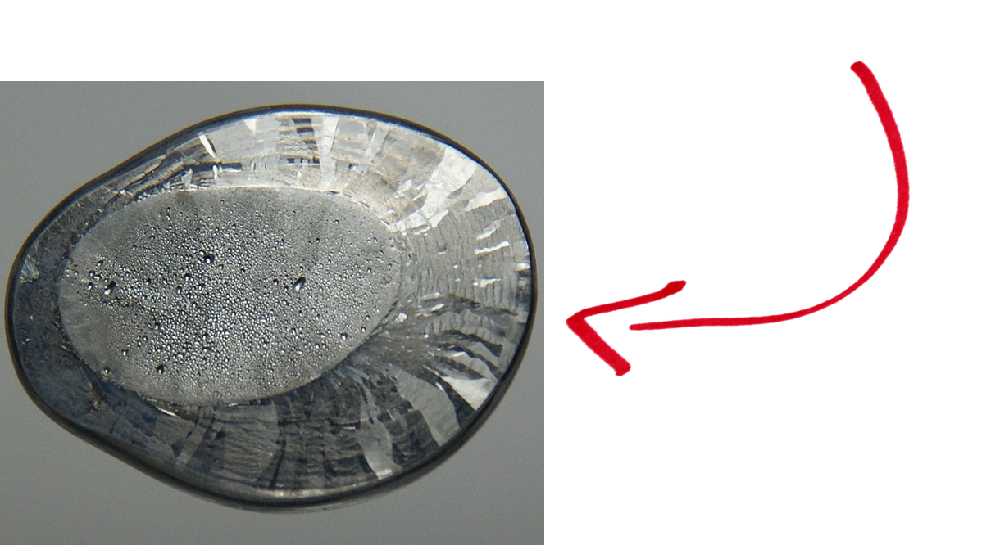
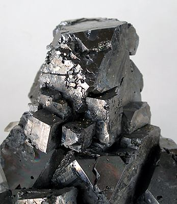
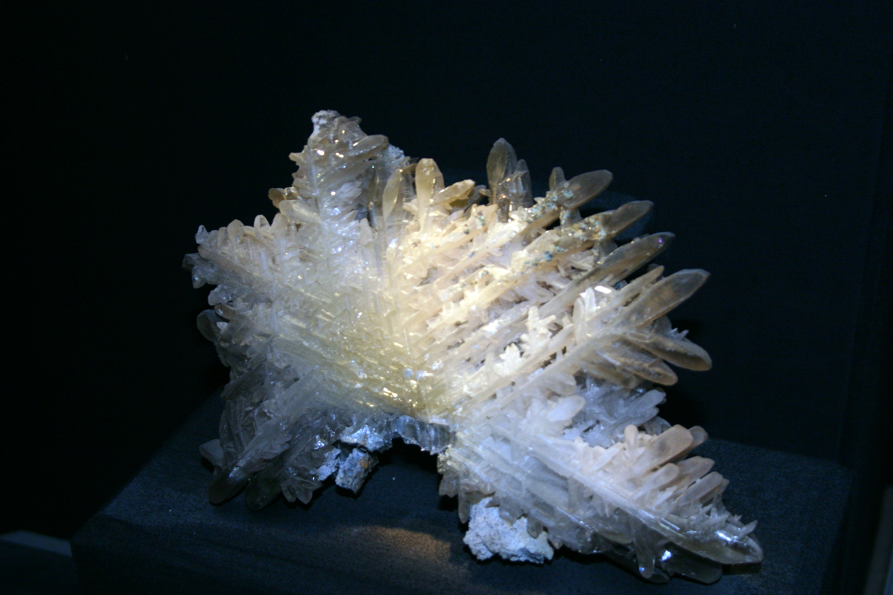
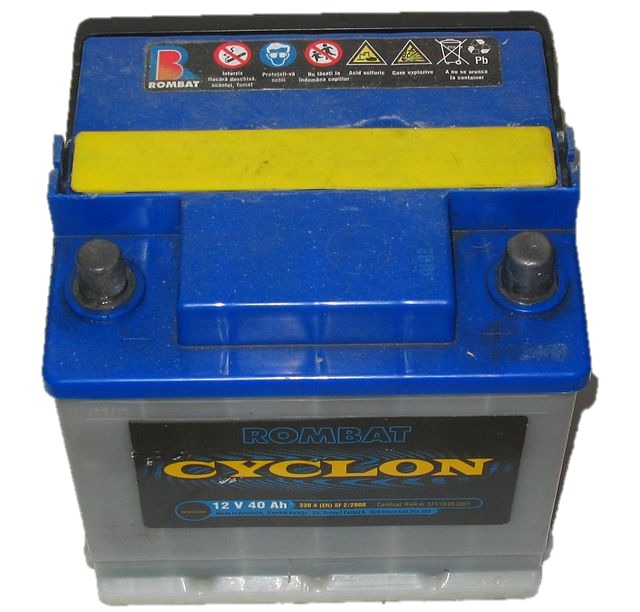

Aceasta este situată în grupa 14 sau IV A şi perioada 6, blocul elementelor p, având ca vecini metalele Teliu (Tl) şi Bismut (Bi).

• Plumbul este un metal greu, de culoare gri-argintie cu densitatea foarte mare.
• Poziţia plumbului în tabelul periodic:
Aceasta este situată în grupa 14 sau IV A şi perioada 6, blocul elementelor p, având ca vecini metalele Teliu (Tl) şi Bismut (Bi).
• Obţinerea plumbului
->Plumbul se găseşte în natură sub formă de minereu, din care este extras.
Cei mai răspândiţi compuşi care se găsesc în natură sunt: -sulfura de plumb - PbS (galenă)
 -carbonatul de plumb - PbCO3.
• Configuraţia electronică a plumbului:
• Ce utilităţi are plumbul?
|
La încărcarea acumulatorului:
• La electrodul pozitiv (anodul): PbO2 ← PbSO4 Electrolit: H2SO4 • La electrodul negativ (catodul): PbSO4 → Pb Electrolit: H2SO4 Când este în funcţiune procesul este invers, şi are loc până la epuizarea ionilor sulfat din soluţia de acid sulfuric, dacă acumulatorul nu este încărcat. În funcţiune: •La catod are loc reducerea plumbului: PbO2 + 4H+ + SO42- + 2e- → PbSO4 + 2 H2O •La anod are loc oxidarea: Pb + SO42- → PbSO4 + 2e- |
 |